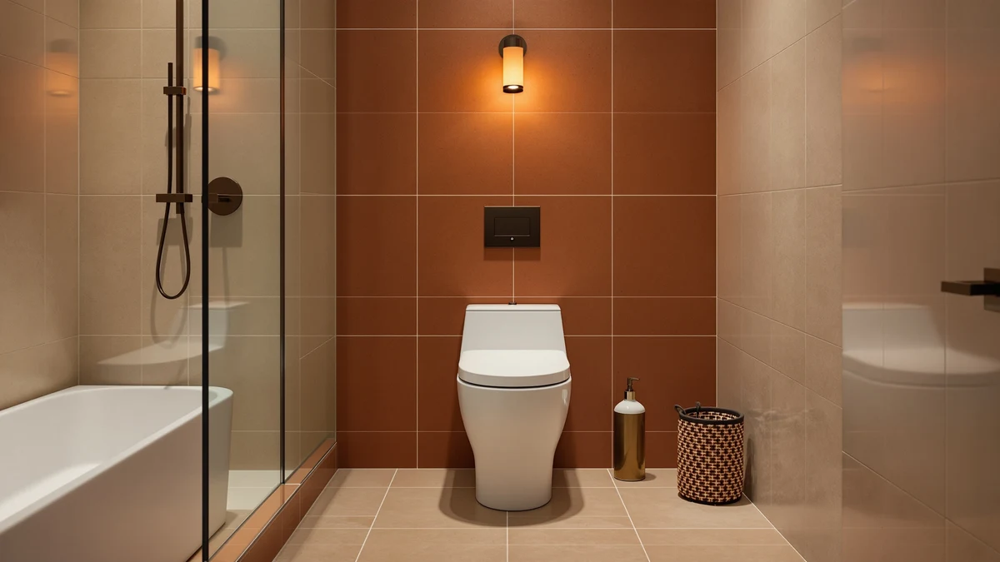

Best One Piece Toilet with Powerful Flush (2026)
Prices and picks verified as of August 2026. Independent, reader-supported reviews.


Quick Answer
For most bathrooms, the DeerValley Compact One Piece Toilet is the best one piece toilet with powerful flush for the money: a sealed one-piece body, a standard 12-inch rough-in, and a single flush system that clears the bowl without the tank-to-bowl gap a two-piece toilet leaves behind. Measure your rough-in before you order, and if you want extra flush control, the dual-flush picks further down give you full power on demand plus a lighter setting for everyday use.
Our pick: DeerValley Compact One Piece Toilet, $198.99 Check Price on Amazon
Bottom line: our top pick is the DeerValley Compact One Piece Toilet with Comfortable Seat at $198.99. The best budget option is the DeerValley Compact One Piece Toilet Standard Seat Height for at $199.
Things to Know Before You Buy
- Bowl shape drives flush power: an elongated bowl gives the flush a longer, straighter path than a round or compact bowl, which is why five of our seven picks are elongated. A compact bowl still flushes fine, it has less room to work with.
- Dual-flush is not weaker: the EliteEdge and DeerValley Elongated picks below give you a full-power flush for solid waste and a lighter setting for everything else, so you get punch when you need it and water savings when you do not.
- Measure your rough-in first: that is the distance from the finished wall to the center of the drain bolts. Three of our picks confirm a standard 12-inch rough-in; the rest do not list one, so check with the seller before you buy.
- One-piece construction matters too: the tank and bowl are molded as a single sealed unit, so there is no tank-to-bowl joint where flush pressure or water can leak away, unlike a two-piece toilet.
- A full skirt is about cleaning, not flush strength: the KK KE KING pick covers its trapway completely for easier wiping, but that feature does not change how hard it flushes.
Finding the best one piece toilet with powerful flush comes down to three things: bowl shape, rough-in fit, and a flush system that clears the bowl in one pass instead of two. A one-piece body already helps, since the tank and bowl are molded into a single sealed water path with no tank-to-bowl joint for pressure to bleed off at. We compared seven models between $198.99 and $359.00, priced for real households rather than showrooms, and sorted them by how their bowl shape, flush design, and rough-in size line up with what buyers actually need.
Two design choices do the most to keep flush power high. An elongated bowl gives the siphon a longer, straighter path to work with, which is why five of our seven picks use that shape instead of a round or compact bowl. Dual-flush systems, built into the EliteEdge One-Piece Toilet for Bathroom Comfort and the DeerValley Elongated One-Piece Toilet with, let you send a full-power flush at solid waste and a lighter one for everything else, so you get punch when you need it without wasting water on the flushes that do not.
Price on this list runs from $198.99 for DeerValley's Compact One Piece Toilet up to $359.00 for the HOROW T0338WM, and the gap mostly buys you height, seller focus, and dual-flush convenience rather than a bigger jump in raw flush strength. Before you buy any one piece toilet with powerful flush, measure your rough-in, the distance from the finished wall to the drain bolts, because a toilet that flushes hard is no good if it does not fit the hole in your floor.
Why You Should Trust Us
This guide is written and maintained by Ilane Tall, who runs a network of bathroom-focused review sites and spends more time than is reasonable comparing fixtures on the specs that actually predict a strong flush rather than marketing copy. We do not run a fake testing lab and we did not bolt seven toilets to a warehouse floor. What we do is read every spec sheet for the details that affect flush performance, bowl shape, rough-in and flush type, cross-check them against owner photos and reviews, and refuse to recommend anything we would not install ourselves. Our Amazon commissions never change a ranking.
How We Picked
We started with one-piece toilets that are actually in stock and shipping in the US, then filtered on what predicts a powerful flush: an elongated bowl where possible, since it gives the siphon a longer path than a round or compact shape, a 12-inch rough-in so it fits standard homes, and either a proven single flush or a dual-flush handle that still delivers full power on demand. We gave weight to manufacturers, like DeerValley and HOROW, that build toilets and bath fixtures as a core business rather than a side line, and we made sure the final seven span a real range of budgets, from $198.99 to $359.00, so there is a sensible answer whichever one piece toilet with powerful flush fits your bathroom and budget.
How We Compared
Since we do not stage a warehouse full of installed toilets, our evaluation is a documentation and owner-experience review rather than a hands-on lab test, and we would rather say that plainly than fake a testing rig. For each model we mapped the published bowl shape, height and rough-in against what buyers report in photos and reviews, weighed how the flush design, elongated versus compact, single versus dual, holds up against the price, and flagged where a listing left out a spec (like rough-in size) that you should confirm before buying. The result is a shortlist built on the specs that actually predict whether a one piece toilet with powerful flush will work in your bathroom.
Our Picks

DeerValley Compact One Piece Toilet
What we like
- Lowest price of the seven picks at $198.99, without giving up a standard 12-inch rough-in
- Compact footprint fits tighter bathrooms where a full elongated bowl will not clear the door swing
- One-piece body skips the tank-to-bowl seam that traps grime on two-piece toilets
- Simple single flush system with fewer parts that can fail over time
Flaws but not dealbreakers
- Compact bowl trades a little legroom versus the elongated models on this list
- No dual-flush option, so you cannot dial back water use on light flushes
| Material | — |
| Size | 12" Rough-In |
The DeerValley Compact One Piece Toilet is the toilet we point budget-conscious buyers to first. At $198.99 it undercuts every other model here, and it still keeps the one-piece construction that seals the whole unit into a single water path from tank to trapway, instead of the tank-to-bowl gap a two-piece toilet leaves for grime, and for flush pressure to bleed off at the joint.
Its 12-inch rough-in matches the vast majority of American bathrooms, so fit is rarely the problem, though you should measure yours before you order to be sure. The trade-off for the compact size is a shorter bowl than the elongated models further down this list, and some taller users notice that. If your bathroom is small or you are outfitting a rental on a budget, it is a sound one piece toilet with powerful flush at a price the elongated picks cannot match.

Elongated One Piece Toilet with
What we like
- Elongated bowl gives the flush a longer, straighter run than a round or compact design
- Standard 12-inch rough-in fits the same footprint as most existing toilets
- One-piece molded body with no tank-to-bowl seam to scrub
- Mid-range price sits comfortably between the budget and premium picks on this list
Flaws but not dealbreakers
- Costs $61 more than the DeerValley Compact pick above
- No dual-flush option, so every flush uses the same amount of water
| Material | — |
| Size | 12" Rough-in |
BYBARENOVA's Elongated One Piece Toilet with steps up from the compact pick above by giving the flush more room to work. An elongated bowl runs a couple of inches longer than a round or compact bowl, and that extra length gives the siphon a straighter, longer path to pull waste through, one of the simplest ways to get a stronger-feeling flush without adding moving parts.
At $259.99 it sits squarely in the middle of this list's price range, and it keeps the standard 12-inch rough-in that fits most American bathrooms. It does not have the dual-flush option that the EliteEdge and DeerValley Elongated picks below offer, so every flush pulls the same amount of water. For a straightforward elongated one piece toilet with powerful flush and no extra buttons to think about, it is a solid middle-of-the-road choice.

HOROW T0338WM Elongated One Piece
What we like
- Elongated bowl shares the same longer flush path advantage as the BYBARENOVA pick above
- Standard 12-inch rough-in keeps installation straightforward
- Comes from HOROW, a brand that focuses specifically on toilets rather than general bath fixtures
Flaws but not dealbreakers
- Most expensive model here at $359.00, a $160 jump over the DeerValley Compact pick
- No dual-flush option, unlike two cheaper picks on this list
| Material | — |
| Size | 12" Rough-in |
The HOROW T0338WM is the most expensive one piece toilet with powerful flush on this list at $359.00, and the case for paying that premium is HOROW's focus. Where several of the other brands here spread across bath rugs, mirrors and other fixtures, HOROW builds toilets specifically, and the T0338WM carries the same elongated bowl and 12-inch rough-in that make the flush path work well on the picks above.
What you are not getting for the extra money is a dual-flush system. Both the EliteEdge pick and the DeerValley Elongated pick below undercut this price and add a dual-flush handle, so the HOROW mainly makes sense if you specifically want a toilet built by a company that does nothing but toilets, and you are comfortable paying more for that focus rather than for extra features.

DeerValley Compact One Piece Toilet
What we like
- Same compact one-piece design and 12-inch rough-in as DeerValley's other Compact pick
- Priced within a dollar of the cheapest toilet on this list
- One-piece molded body with the same seam-free cleaning advantage
Flaws but not dealbreakers
- Nearly identical to the DeerValley Compact pick above, so there is little reason to pick this one unless it is the listing in stock
- Same compact bowl trade-off versus the elongated picks
| Material | — |
| Size | 12" Rough-In |
This second DeerValley Compact One Piece Toilet runs the same compact design and 12-inch rough-in as our top pick, at $199.00, a single dollar more. DeerValley sells more than one listing of this compact model, and the flush engineering and one-piece construction behind both are the same.
We include it because stock on any single listing can run out, and having a nearly identical backup from the same manufacturer means you are not stuck choosing a completely different toilet if the first one sells out. If you already decided the compact DeerValley is your one piece toilet with powerful flush at this price point, either listing gets you the same toilet.

One-Piece Toilet for Bathroom Comfort
What we like
- Dual-flush handle sends full power at solid waste and a lighter flush for everything else
- Elongated bowl at 16 inches tall makes sitting down and standing up easier than a standard-height toilet
- Priced under the HOROW and BYBARENOVA picks despite adding the dual-flush feature
Flaws but not dealbreakers
- No rough-in size is listed, so confirm compatibility with the seller before ordering
- EliteEdge is a less established brand than DeerValley or HOROW
| Material | — |
| Size | 16" H & Dual Flush & Elongated |
EliteEdge's One-Piece Toilet for Bathroom Comfort combines two features that work together on flush power: an elongated bowl and a dual-flush handle. The elongated shape gives the flush the same longer path that helps the BYBARENOVA and HOROW picks, while the dual-flush handle lets you choose a full flush for solid waste and hold back water on lighter flushes, so you are not always spending full flush power, or full water, on every trip.
At 16 inches tall, the bowl also sits close to comfort height, which makes it easier to sit down onto and stand up from than a standard 15-inch bowl. At $249.99 it undercuts the HOROW pick by over $100 while adding a feature the HOROW does not have. The one thing to check before you buy is rough-in size, since EliteEdge's listing does not spell it out the way DeerValley and HOROW do.

DeerValley Elongated One-Piece Toilet with
What we like
- Tallest bowl on this list at 18.2 inches, easier on the knees than the 16-inch EliteEdge pick or a standard-height bowl
- Dual-flush handle gives the same water-saving flexibility as the EliteEdge pick, from the same manufacturer as our top budget pick
- Priced under both the BYBARENOVA and HOROW elongated picks
Flaws but not dealbreakers
- The taller bowl that helps some users can feel too tall for shorter adults or small children
- No rough-in size is listed, so confirm it fits your bathroom before ordering
| Material | — |
| Size | 18.2" H with Dual Flush |
The DeerValley Elongated One-Piece Toilet with pairs the same dual-flush handle as the EliteEdge pick with the tallest bowl on this list, 18.2 inches. That extra height over the EliteEdge's 16 inches and a standard 15-inch bowl makes a real difference for taller adults or anyone with knee or back issues who finds it a strain to sit down onto or stand up from a lower toilet.
At $240.80 it comes from the same DeerValley lineup as our top budget pick, so you get a manufacturer we already trust on the compact models, in a taller, dual-flush elongated configuration instead. The extra height is the main thing to weigh: it is a comfort feature more than a flush-power one, and shorter household members may find it tall. Elongated shape and dual-flush handle both work in this toilet's favor as a one piece toilet with powerful flush that also saves water on the flushes that do not need full force.

Elongated One-Piece Toilet Full Skirt
What we like
- Full skirt design covers the trapway completely, leaving no ridges or curves to scrub around
- Elongated bowl shares the same longer flush path advantage as the other elongated picks
- Second-lowest price on this list at $209.99
Flaws but not dealbreakers
- No rough-in size or material spec published, so you will need to confirm fit with the seller
- Less established brand name than DeerValley or HOROW
| Material | — |
| Size | — |
The Elongated One-Piece Toilet Full Skirt from KK KE KING leads with a cosmetic feature that is easy to undervalue: a full skirt that covers the trapway, the curved pipe under the bowl, completely, instead of leaving it exposed the way most toilets do. That means fewer ridges and corners to scrub around during cleaning, on top of the elongated bowl shape that gives the flush the same longer path advantage as the BYBARENOVA and HOROW picks.
At $209.99 it is the second-cheapest toilet on this list, behind only the two DeerValley Compact listings. The catch is that KK KE KING's listing does not spell out a rough-in distance or bowl material the way DeerValley and HOROW do, so confirm those details with the seller before you buy. If the skirted, seam-free look matters to you as much as flush power, it is worth the extra step.
Quick Comparison
| Product | Material | Price | Rating | Best for | Get it |
|---|---|---|---|---|---|
| DeerValley Compact One Piece Toilet | — | $198.99 | 4 | Best value pick | View on Amazon → |
| Elongated One Piece Toilet with | — | $259.99 | 4 | Mid-range elongated bowl | View on Amazon → |
| HOROW T0338WM Elongated One Piece | — | $359.00 | 4 | Premium single-brand build | View on Amazon → |
| DeerValley Compact One Piece Toilet | — | $199.00 | 4 | Backup compact configuration | View on Amazon → |
| One-Piece Toilet for Bathroom Comfort | — | $249.99 | 4 | Dual-flush comfort height | View on Amazon → |
| DeerValley Elongated One-Piece Toilet with | — | $240.80 | 4 | Tallest bowl, dual-flush | View on Amazon → |
| Elongated One-Piece Toilet Full Skirt | — | $209.99 | 4 | Easiest to clean (full skirt) | View on Amazon → |
The Competition
Plenty of one-piece toilets marketed on flush power did not make this list, usually for a predictable reason. Several ultra-cheap round-bowl listings undercut our DeerValley Compact pick on price but do it with a bare-bones gravity flush and a pattern of cracked-on-arrival complaints, and a toilet that arrives damaged is no bargain no matter how hard it flushes.
We also passed on a handful of smart-toilet and bidet-seat combinations. They add useful features, but they cost multiples of everything here, need an outlet nearby, and answer a different question than what the best straightforward one piece toilet with powerful flush is. If you want a heated seat and a washlet, that is a separate guide.
Finally, we set aside a few well-known-brand models that were perfectly functional but did not beat our picks on value, either the flush was no stronger for a higher price, or the seller left out basic specs like rough-in size without any offsetting advantage. When a bigger logo costs more without doing more, DeerValley's compact pick remains the best one piece toilet with powerful flush for most budgets, and the pricier HOROW and dual-flush DeerValley Elongated cover the cases where extra height or water control is worth paying for.
Frequently Asked Questions
What actually makes a one-piece toilet flush more powerfully?
Two things matter most: bowl shape and flush type. An elongated bowl gives the siphon a longer, straighter path to pull waste through than a round or compact bowl, and a dual-flush handle lets you send full power at solid waste while holding back water on lighter flushes. A one-piece body also helps, since the tank and bowl share a single sealed water path instead of the tank-to-bowl joint on a two-piece toilet.
Do I need a 12-inch rough-in for every toilet on this list?
Most of them, yes. The DeerValley Compact, BYBARENOVA Elongated and HOROW T0338WM all confirm a standard 12-inch rough-in. The EliteEdge, DeerValley Elongated and KK KE KING Full Skirt models do not list one, so measure from your finished wall to the center of the drain bolts and confirm with the seller before you order.
Is a dual-flush toilet weaker than a single powerful flush?
No. A dual-flush handle still gives you a full-power flush on demand, it adds a lighter option for liquid waste so you are not always using maximum water. The EliteEdge and DeerValley Elongated picks on this list both keep full flush strength available while cutting water use on the flushes that do not need it.